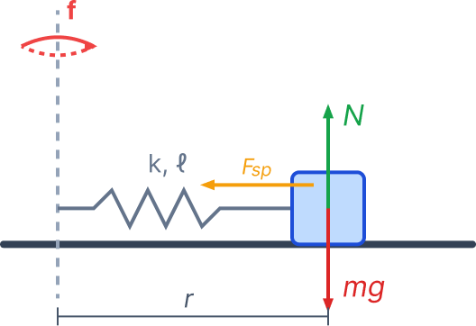

סעיף א': מציאת ביטוי לרדיוס הסיבוב
מסת העגלה היא \( m \), קבוע הקפיץ הוא \( k \), ואורך הקפיץ הרפוי הוא \( \ell \). השולחן מסתובב בתדירות של \( f \) סיבובים לשנייה. המערכת נמצאת במישור אופקי (שולחן). העגלה מסתובבת יחד עם השולחן ברדיוס \( r \).
עלינו לפתח ביטוי אלגברי עבור רדיוס הסיבוב \( r \) של העגלה כפונקציה של הנתונים בלבד: \( m, k, \ell, f \).

הצבה ופתרון
נבחר מערכת צירים: ציר אנכי (\( y \)) כלפי מעלה, וציר רדיאלי (\( R \)) המכוון אל מרכז המעגל. בציר האנכי אין לעגלה תאוצה, ולכן על פי החוק השני של ניוטון סכום הכוחות שווה לאפס:
בציר הרדיאלי, הכוח היחיד שפועל על העגלה וגורם לתנועתה המעגלית הוא כוח הקפיץ. התאוצה של העגלה היא תאוצה רדיאלית \( a_R \) המכוונת למרכז:
גודל כוח הקפיץ תלוי במידת ההתארכות שלו. מידת ההתארכות \( \Delta l \) היא ההפרש בין אורך הקפיץ בפועל (שהוא רדיוס הסיבוב \( r \)) לבין אורכו הרפוי \( \ell \):
נבטא את התאוצה הרדיאלית באמצעות התדירות הנתונה \( f \):
כעת, נציב את כוח הקפיץ והתאוצה הרדיאלית בחוק השני של ניוטון:
נפתח סוגריים ונבודד את רדיוס הסיבוב \( r \):
סעיף ב': משמעות פיזיקלית של הביטוי
מצאנו בסעיף א' את הביטוי לרדיוס הסיבוב: \( r = \frac{k\ell}{k - 4\pi^2 f^2 m} \).
האם הביטוי תקף (כלומר, האם יש לו משמעות פיזיקלית) עבור כל תדירות סיבוב \( f \)? עלינו לנמק זאת.
הצבה ופתרון
כדי שלביטוי יהיה משמעות פיזיקלית במערכת שלנו, צריכים להתקיים שני תנאים: 1. רדיוס המסלול \( r \) חייב להיות חיובי (\( r > 0 \)). 2. הקפיץ חייב להיות מתוח כדי לספק את הכוח למרכז, כלומר רדיוס המסלול חייב להיות גדול מאורכו הרפוי של הקפיץ (\( r > \ell \)).
נתבונן במונה של הביטוי: המונה הוא \( k\ell \), ושני הגדלים הללו הם תמיד חיוביים (קבוע קפיץ ואורך רפוי). לכן, על מנת שהשבר כולו \( r \) יהיה חיובי, חובה שהמכנה גם הוא יהיה חיובי:
נחלץ מאי-השוויון את התנאי עבור התדירות \( f \):
סעיף ג': התדירות הקריטית לנפילת העגלה
- קוטר השולחן הוא \( 2.5 \text{m} \). לכן, הרדיוס המקסימלי האפשרי לעגלה לפני שהיא נופלת הוא:
\[ R_{max} = \frac{2.5}{2} = 1.25 \text{m} \] - אורך התחלתי (רפוי) של הקפיץ הוא \( 25 \text{cm} \). נמיר למטרים (MKS):
\[ \ell = \frac{25}{100} = 0.25 \text{m} \] - קבוע הקפיץ: \( k = 60 \frac{\text{N}}{\text{m}} \) (תקין).
- מסת העגלה: \( m = 2.4 \text{kg} \) (תקין).
באיזו תדירות \( f \) יש לסובב את השולחן כדי שהעגלה תגיע בדיוק לקצה השולחן (כלומר, כאשר רדיוס הסיבוב יהיה שווה ל-\( R_{max} \)), ומשם היא כמובן תיפול ממנו?
הצבה ופתרון
נציב את כל הנתונים (ביחידות MKS) לתוך הנוסחה של רדיוס הסיבוב, כאשר אנו דורשים \( r = 1.25 \text{m} \):
נחשב את המונה, ונכפול את המכנה ב-\( 1.25 \):
נעביר אגפים ונבודד את \( f^2 \):
נוציא שורש כדי למצוא את התדירות:
(או לחלופין: \(\approx 0.712\;1/\text{s}\))